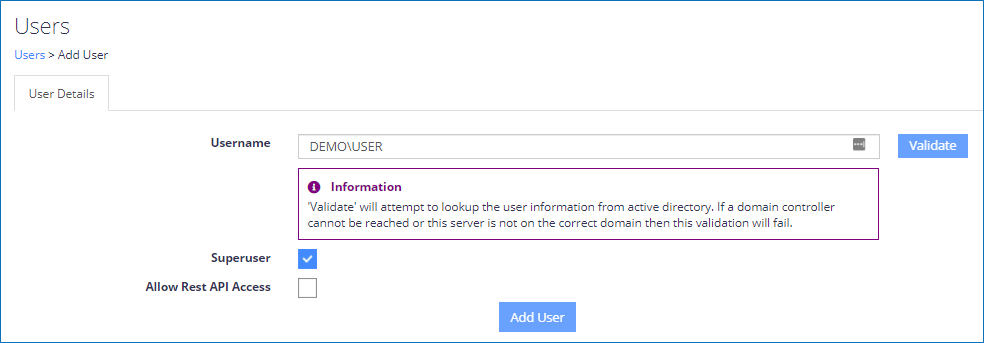
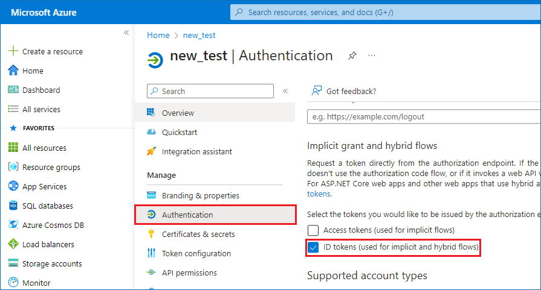
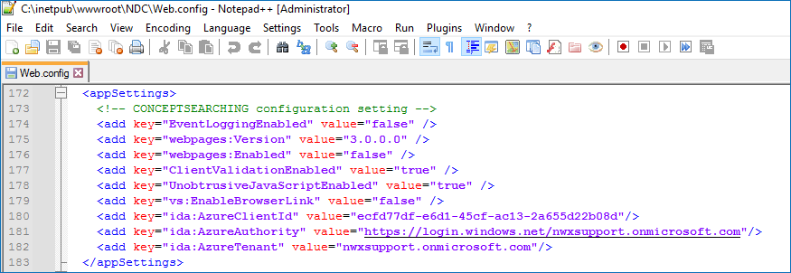

Question
How can you set up single sign-on (SSO) for Netwrix Data Classification (NDC) via Microsoft Entra ID authentication (formerly Azure AD)?
IMPORTANT: The Netwrix Data Classification and Netwrix Auditor integration (NDC Provider) currently does not support single sign-on (SSO). SSO needs to be disabled in Netwrix Data Classification for the account used by the NDC Provider to authenticate. For up-to-date information on the NDC Provider integration, refer to the following documentation article: Sensitive Data Discovery — Permissions for Integration with Netwrix Data Classification · v10.6.
Answer
Register Netwrix Data Classication (NDC) in the Azure Portal
-
Assign a certificate to the default website where NDC is hosted.
-
Make sure that the NDC Administration Console is accessible in your browser (e.g.,
https://classification.contoso.com/NDC). -
Add your Microsoft Entra account as a Superuser:
-
On the main NDC screen, select Settings.
-
Select the Users tab, and click Add user.
NOTE: Make sure to check the Superuser checkbox.

-
-
Visit App registrations menu in your Microsoft Azure Portal to register an application.
-
In the upper navigation bar, click New registration.
-
In the Redirect URI section, select Web in the dropdown menu and enter the Administration Console URL in the corresponding field (e.g.,
https://classification.contoso.com/NDC). -
Click Register to save your changes.
-
Copy the Application (Client) ID of the newly created application.
-
Select your application and open the Authentication tab in the left pane.
 -
Check the ID tokens (used for implicit and hybrid flows) checkbox and click Save.
-
-
Back up the
web.configfile in the NDC IIS folder (located in C:\inetpub\wwwroot\NDC by default). You can check your actual NDC IIS folder path by right-clicking the NDC node under Default Web Site in IIS and selecting Explore. -
Edit the original
web.configfile from the NDC IIS folder to add the following lines to the <appSettings> node:<add key="ida:AzureClientId" value="Application (Client) ID"/> <add key="ida:AzureAuthority" value="https://login.windows.net/tenantname.onmicrosoft.com"/> <add key="ida:AzureTenant" value="tenantname.onmicrosoft.com"/>NOTE: Replace the Application (Client) ID with the one copied previously and the tenantname.onmicrosoft.com with your tenant's name.
-
Close all your browser windows and then open the NDC Administration Console (e.g.
https://classification.contoso.com/NDC). -
NOTE: In a DQS environment, steps 5 and 6 must be completed on each server NDC is installed on before proceeding to step 7.
NOTE: If you have previously configured the application to use ADFS, refer to the following steps:
-
On the main NDC screen, select Settings.
-
Select the Users tab, select all users, and select Delete.
-
Open the
web.configfile (located in C:\inetpub\wwwroot\NDC by default) and remove appSettings entries specific to ADFS:ida:ADFSMetadata ida:Wtrealm
Make a REST API call using Bearer Auth
When utilising NDC REST APIs with Microsoft Entra authentication, the first step is to retrieve a bearer token. Each API call should include the bearer token as its method of authentication. The code snippet provided below (C#) uses RestSharp to connect to Microsoft Entra ID and retrieve a bearer token to be used with REST APIs:
var tenancy = "conceptsearching.com";
var clientId = "NewAzureADClientID (GUID)";
var clientSecret = "";
var username = "developer%40conceptsearching.com";
var password = "";
var client = new RestClient($"https://login.microsoftonline.com/{tenancy}/oauth2/token");
var request = new RestRequest(Method.POST);
request.AddHeader("Cache-Control", "no-cache");
request.AddHeader("Content-Type", "application/x-www-form-urlencoded");
request.AddParameter("undefined", $"grant_type=password&username={username}&password={password}&client_id={clientId}&resource={clientId}&client_secret={clientSecret}", ParameterType.RequestBody);
IRestResponse response = client.Execute(request);
The access_token value from the response should be included in each
subsequent request via REST APIs as a header variable in the following format:
Key: "Authorization" Value: "Bearer YOURTOKEN"